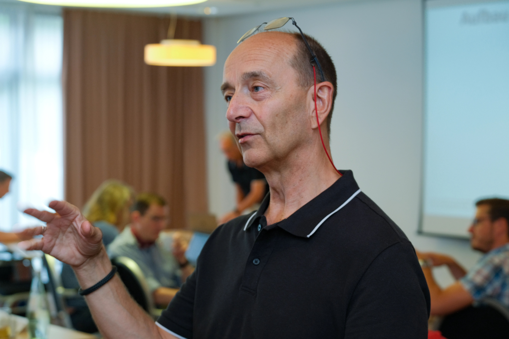
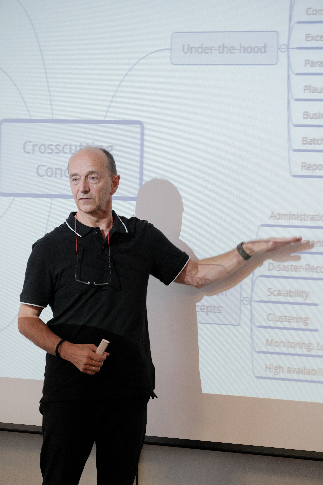
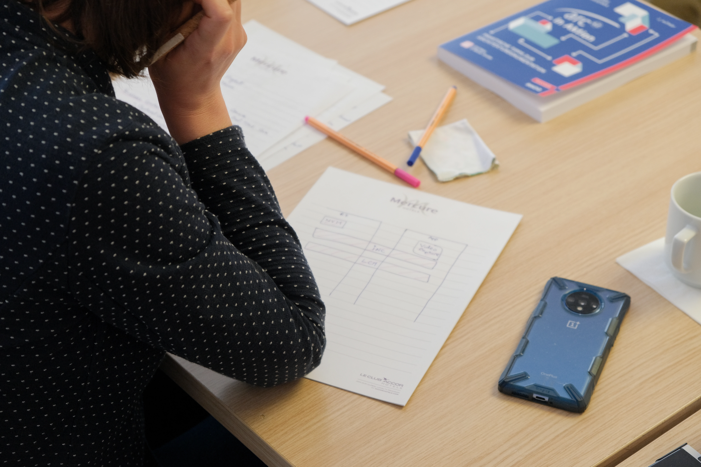

made by Peter, Gernot, Ralf and friends
made by Peter, Gernot, Ralf and friendsClarify
Find goals, constraints, quality scenarios, and risks worth making explicit.
Ask whyArchitecture as recurring work
The arc42 method is not a phase. It is a feedback loop that keeps architecture decisions, implementation, risks, and stakeholders in contact.
“A document is a snapshot. Architecture work is the conversation around it.”Workshop note
Learn continuously, clarify requirements, design structures and concepts, communicate decisions, accompany implementation, and review the result.
Find goals, constraints, quality scenarios, and risks worth making explicit.
Ask whyShape structures and cross-cutting concepts that respond to those forces.
Make choicesCompare implementation and operation against the intended architecture.
Look againThe arc42 canvas
The canvas is an invitation to talk. It captures the problem, important requirements, stakeholders, risks, solution ideas, and next questions without pretending the architecture is finished.
Print it. Draw on it. Cross things out. (Ralf)



